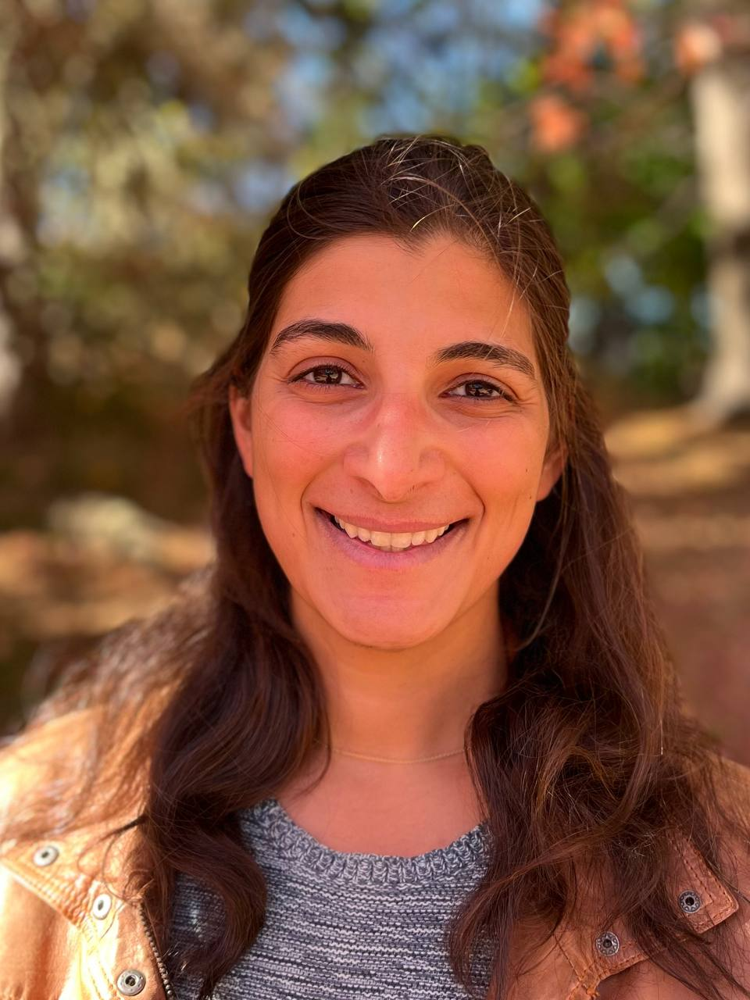

I am a postdoctoral research fellow with Sallie Chisholm at the Massachusetts Institute of Technology.
Broadly, I am interested in the relationship between the ecology and evolution of the marine photosynthetic bacterium Prochlorococcus and the marine carbon cycle.
My research focuses on biofilm formation and dynamics in these cyanobacteria, bringing in tools from quantitative biophysics and modeling.
My postdoctoral work has been supported by a Simons Postdoctoral Fellowship in Marine Microbial Ecology (2022-2025) and a Burroughs Wellcome Fund Career Award at the Scientific Interface (2025-2030).
Previously, I received my Ph.D. in Applied Physics from Harvard University, working with Dan Needleman, and I received my undergraduate degree in Bioengineering from Stanford University.
48-424
15 Vassar Street
Cambridge, MA 02139